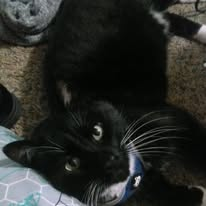

Column
Gray Lewis Crisp is someone who has been writing for a long time. They are tired of reading books that don't fit what they want to read so they figure they'll do it themself!
Thier dream is to live out thier days writing, with Otis the cat who is a great writing buddy, until he falls asleep on the keyboard...
